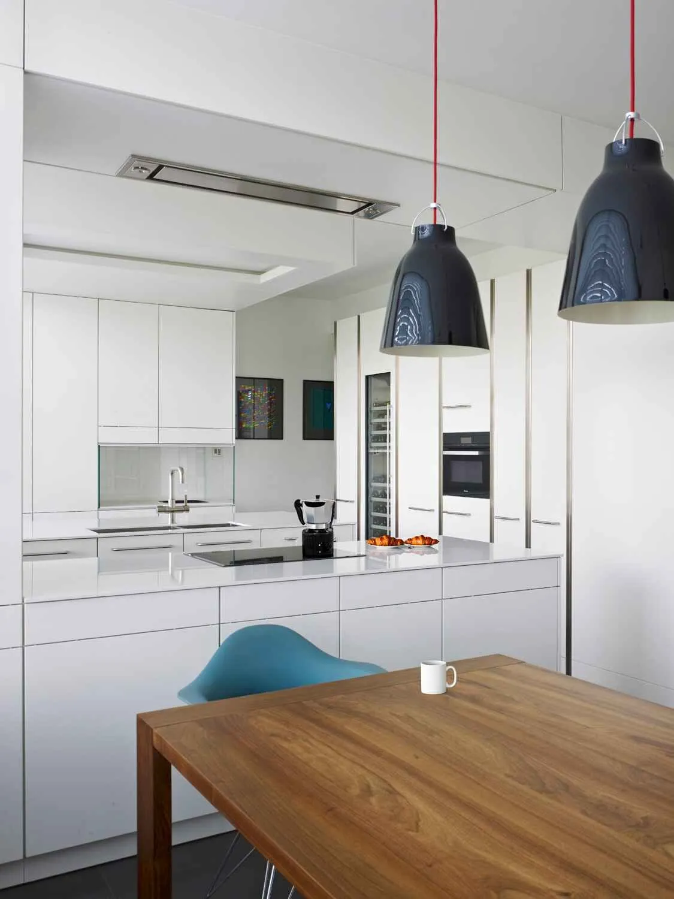
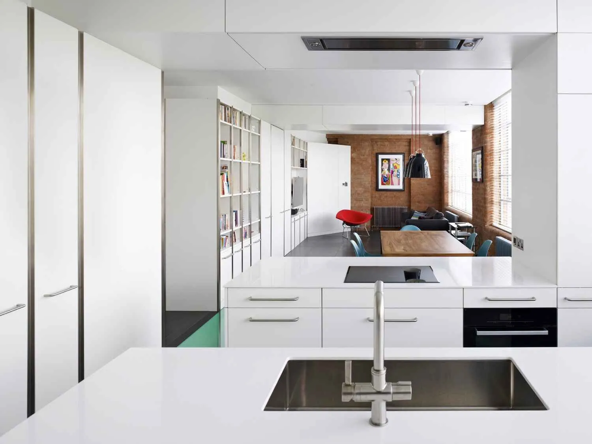
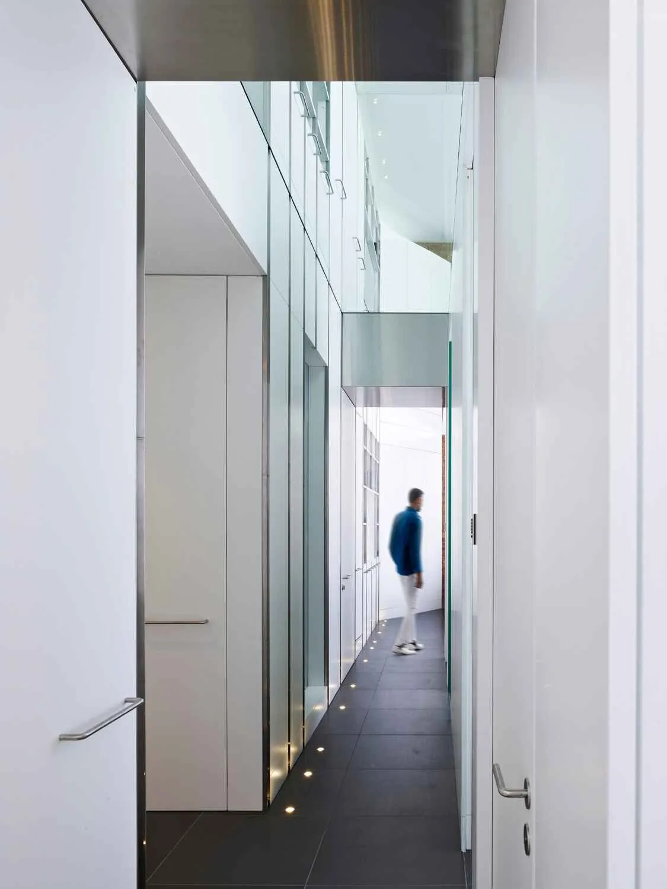
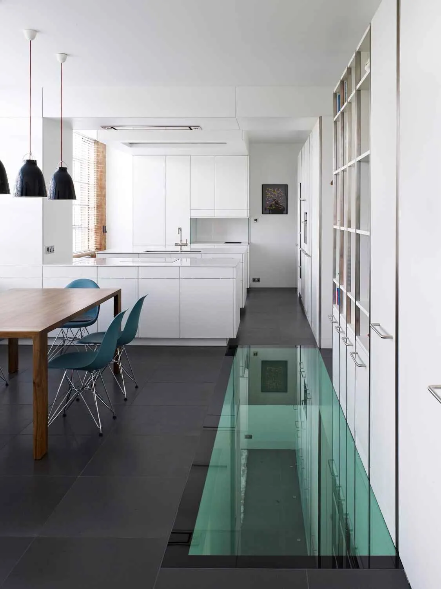
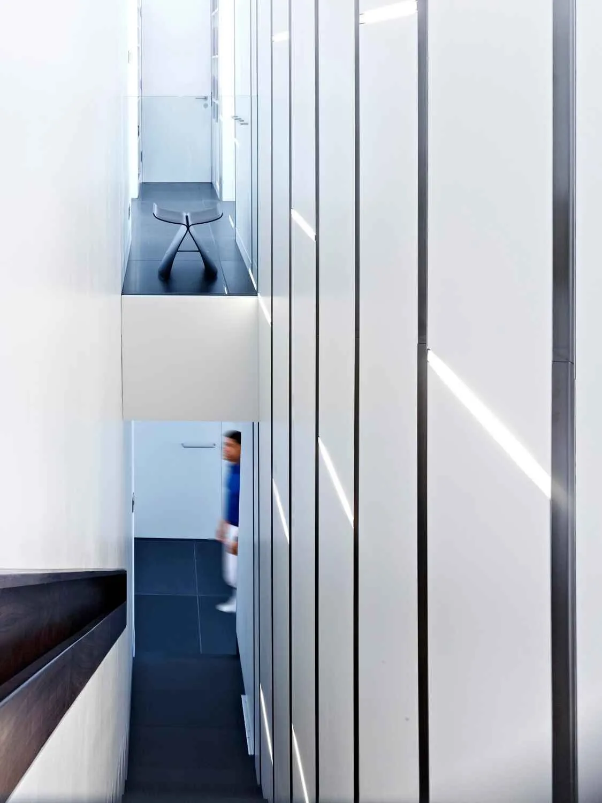
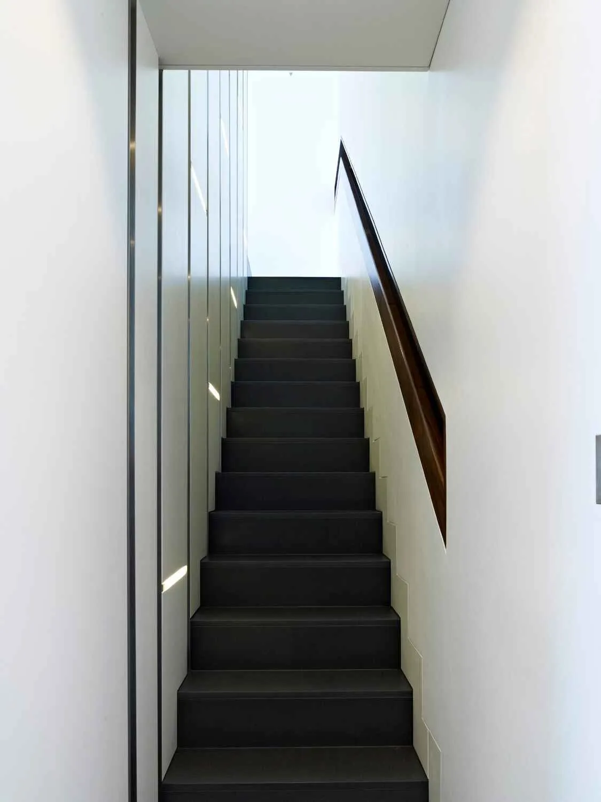
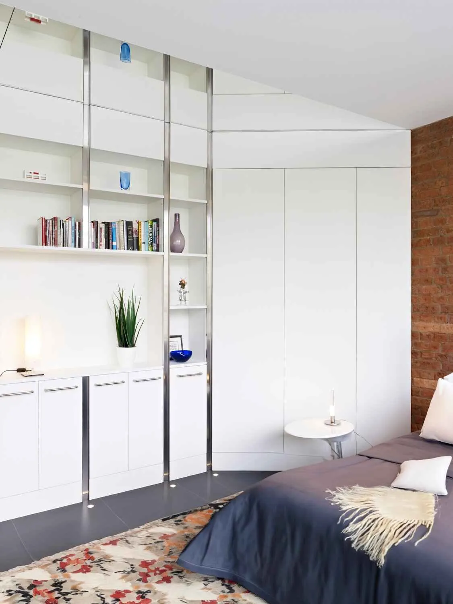

Canyon House
Two stacked warehouse flats in Farringdon combined into one home around a seven-metre storage wall, a glazed floor panel and a mirrored slot corridor.
Two flats into one.
The clients owned two flats stacked in a converted warehouse and wanted to live across both. The challenge was the join: how to make the two floors read as one home without losing the warehouse character or the north-west light coming in from the windows.
The plan turns the circulation into the main move. A seven-metre storage wall runs the full height between the two floors and locks the spaces together. A glazed floor panel between the floors lets daylight drop from one level to the next, and ceiling mirrors at each end of the panel extend the sense of height.
The layout stays flexible: bedrooms and living spaces are treated as equivalents, so the home can be set up as three bedrooms with a large living room, or as multiple smaller rooms, without rebuilding. Joinery is spray-lacquered with stainless steel shadow gaps; the corridor is a mirrored slot at the front of the plan, made deliberately into the centrepiece.





"He helped us maximise every room adding plenty of storage and without sacrificing the look and feel of our home."
Flora Stan, client


What it's made of.
Where it appeared.